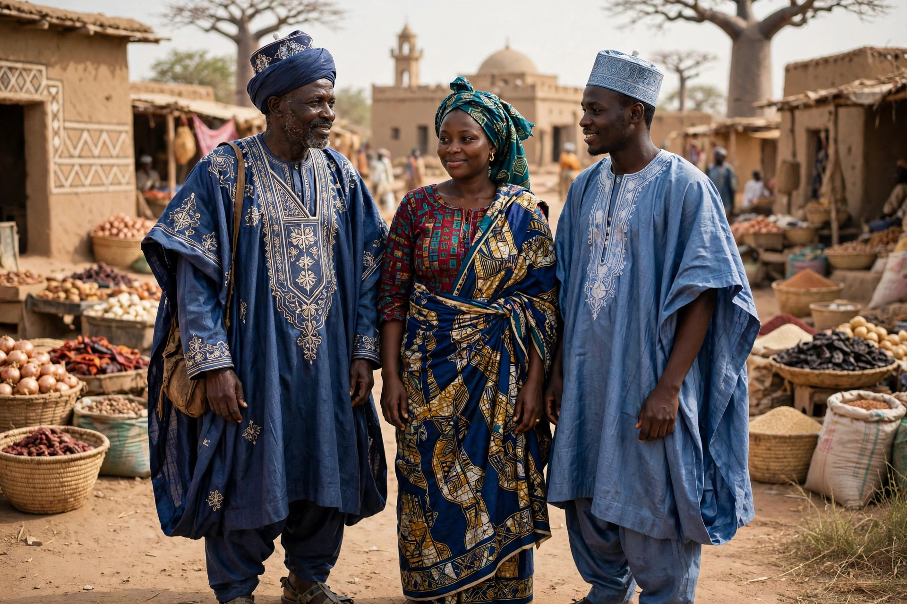

| Hausa | |
|---|---|
| Total population | Tens of millions |
| Regions | Northern Nigeria, southern Niger |
| Languages | Hausa |
| Religion | Predominantly Islam |

The Hausa people are one of the largest ethnic groups in West and Central Africa, native to Hausaland in present-day northern Nigeria and southern Niger. They speak Hausa, a Chadic language of the Afroasiatic family that serves as a lingua franca across much of West Africa.
Hausa city-states — including Kano, Katsina, Zaria, Gobir, Daura and Rano — emerged as trading and manufacturing centres linked to trans-Saharan commerce in gold, leather, cloth and slaves. According to tradition, they trace descent from Bayajidda. In the early 19th century Usman dan Fodio's jihad incorporated most Hausa states into the Sokoto Caliphate.
Hausa society is predominantly Muslim, with Islam present since the 14th–15th centuries, and is known for indigo dyeing, weaving, embroidered robes (babanriga), architecture in mud-brick with decorative facades, and cuisine based on millet, sorghum, rice and groundnuts. Urban culture, markets and Islamic scholarship remain central.
Hausa trading diasporas are found across West Africa, Sudan and beyond, and Hausa is widely learned as a second language.